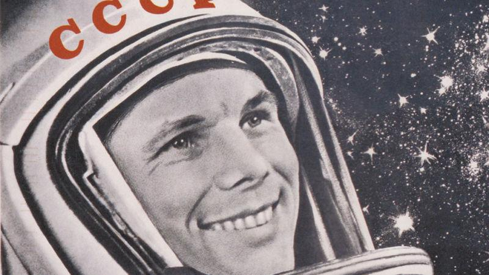
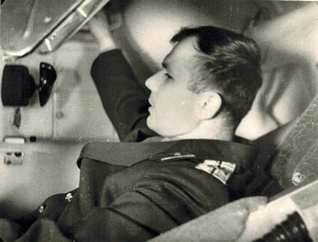

Как когда-то сказал Юрий Алексеевич Гагарин - "Поехали"!
Нажав на кнопку старта, все управление запуском сосредоточено в руках ракетчиков.
ГАГАРИН. ПОЕХАЛИ! КАК ЭТО БЫЛО (фантомные отступы + opacity)
В начале 1959 г. в Академии наук СССР узкий круг осведомленных людей обсуждал возможность полёта человека в космос. К тому времени у СССР уже был успешный опыт запусков искусственных спутников, а значит, была и надежда. Начали появляться постановления Правительства, где были прописаны задачи по подготовке полёта человека в космическое пространство. Для нас важен документ, который стал основой для деятельности тех, кого в соответствии с ним стали называть космонавтами. Это – Приказ Главкома ВВС №267, в соответствии с которым на должность слушателей-космонавтов были зачислены первые 12 лётчиков-истребителей: Аникеев И.Н., Быковский В.Ф., Волынов Б.В., Гагарин Ю.А., Горбатко В.В., Комаров В.М., Леонов А.А., Нелюбов Г.Г., Николаев А.Г., Попович П.Р., Титов Г.С., Шонин Г.С. В начале июля того же года отряд был сформирован окончательно. В него были включены дополнительно Беляев П.И., Бондаренко В.В., Варламов В.С., Заикин Д.А., Карташов А.Я., Рафиков М.З., Филатьев В.И. и Хрунов Е.В.
Первую двадцатку спустя многие годы так и будут называть – гагаринский отряд. Но это случится много позже. Приказ вышел в свет 7 марта 1960 г.; именно это день и стал официальной датой создания Отряда космонавтов. В первых числах марта кандидаты в космонавты начали прибывать в Москву. Местом их временного проживания стал Центральный аэродром им. М.В. Фрунзе. В этом тоже была некая символика – раньше аэродром назывался Ходынским полем, над которым в начале ХХ века парили первые лётчики России. Двухэтажное здание спортивной базы ЦСКА стало их временным домом и местом для первых занятий.
14 марта 1960 г., в 9.00 по московскому времени у будущих космонавтов начались теоретические занятия. До первого полёта человека в космос остаётся еще чуть больше года. Объём знаний и умений, которые должны были получить будущие космонавты, был огромен. И расслабляться было некогда. Им читали лекции по авиационной и космической медицине, по ракетной технике и динамике полёта, по конструкции космического корабля и его многочисленным системам, и ещё по многим узкоспециальным дисциплинам. Примерно в середине апреля первые 11 человек были откомандированы в г. Энгельс Саратовской области, где приступили к парашютным тренировкам. Чуть позже к ним присоединились ещё двое. Парашютные занятия с прыжками самой разной сложности продолжались целый месяц.
По возвращении в Москву их ждали тренировки в барокамере, термокамере, сурдокамере, на центрифуге, вибростенде, полёты на невесомость, регулярные спортивные занятия, продолжение теоретических занятий по различным дисциплинам. Примерно тогда же первая двадцатка познакомилась с тем, кто возглавлял огромный коллектив, кто проектировал, создавал и готовил для них космические корабли. На одно из занятий в Москву приехал С.П. Королёв. Первая встреча была короткой, Сергей Павлович говорил с будущими космонавтами мало, больше всматривался в них, как будто выбирая того, кто станет первым. Но вот и пришло время приступить к тому, что у лётчиков называется предполётной подготовкой. От традиционной она отличалась тем, что занимала весьма длительное время - почти 6 месяцев. За полгода надо было досконально изучить космический корабль и то, как функционируют все его системы. Корабль надо было освоить до такой степени, чтобы он для будущего космонавта стал родным домом. Спустя примерно полгода, если быть точным – 11 октября 1960 г. – новым Приказом Главкома ВВС №176 была определена группа из шести лётчиков, которые должны были начать заниматься по ускоренной программе. В октябре 1960 г. они приступают к занятиям на тренажёре космического корабля «Восток» в лётно-исследовательском институте подмосковного города Жуковского.
Visibility:hidden; действует на нижний блок (его не видно)
По возвращении в Москву их ждали тренировки в барокамере, термокамере, сурдокамере, на центрифуге, вибростенде, полёты на невесомость, регулярные спортивные занятия, продолжение теоретических занятий по различным дисциплинам. Примерно тогда же первая двадцатка познакомилась с тем, кто возглавлял огромный коллектив, кто проектировал, создавал и готовил для них космические корабли. На одно из занятий в Москву приехал С.П. Королёв. Первая встреча была короткой, Сергей Павлович говорил с будущими космонавтами мало, больше всматривался в них, как будто выбирая того, кто станет первым. Но вот и пришло время приступить к тому, что у лётчиков называется предполётной подготовкой. От традиционной она отличалась тем, что занимала весьма длительное время - почти 6 месяцев. За полгода надо было досконально изучить космический корабль и то, как функционируют все его системы. Корабль надо было освоить до такой степени, чтобы он для будущего космонавта стал родным домом. Спустя примерно полгода, если быть точным – 11 октября 1960 г. – новым Приказом Главкома ВВС №176 была определена группа из шести лётчиков, которые должны были начать заниматься по ускоренной программе. В октябре 1960 г. они приступают к занятиям на тренажёре космического корабля «Восток» в лётно-исследовательском институте подмосковного города Жуковского.
scroll
25 марта 1961 г. на космодроме должен был состояться ещё один пуск ракеты-носителя с космическим кораблём. В этот раз его пассажирами были собаки Звёздочка и Чернушка. И этот полёт стал удачным. Всем уже было понятно: первый старт человека в космос наступит совсем скоро. 18 марта 1961 года в монтажно-испытательный корпус прибыла группа во главе с Героем Советского Союза генералом Н.П. Каманиным, руководителем центра подготовки космонавтов, Е.А. Карповым, специалистом в области авиационной медицины и генералом Л.И. Гореглядом. В тот день ведущий конструктор О.Г. Ивановский давал пояснения и отвечал на вопросы о космическом аппарате («Салют»). Среди слушателей были Григорий Нелюбов, Герман Титов, Юрий Гагарин, Андриян Николаев, Валерий Быковский, Павел Попович. 20 марта в одной из лабораторий монтажно-испытательного корпуса будущие космонавты провели тренировку по надеванию и регулировке скафандра под руководством ведущего конструктора О.Г. Ивановского и ведущих специалистов по скафандру: Ф.А. Востокова и В.И. Сверщека. Мало кто знал в то время, что к данному моменту было изготовлено всего только три индивидуальных скафандра: для Юрия Гагарина, Григория Нелюбова и Германа Титова.